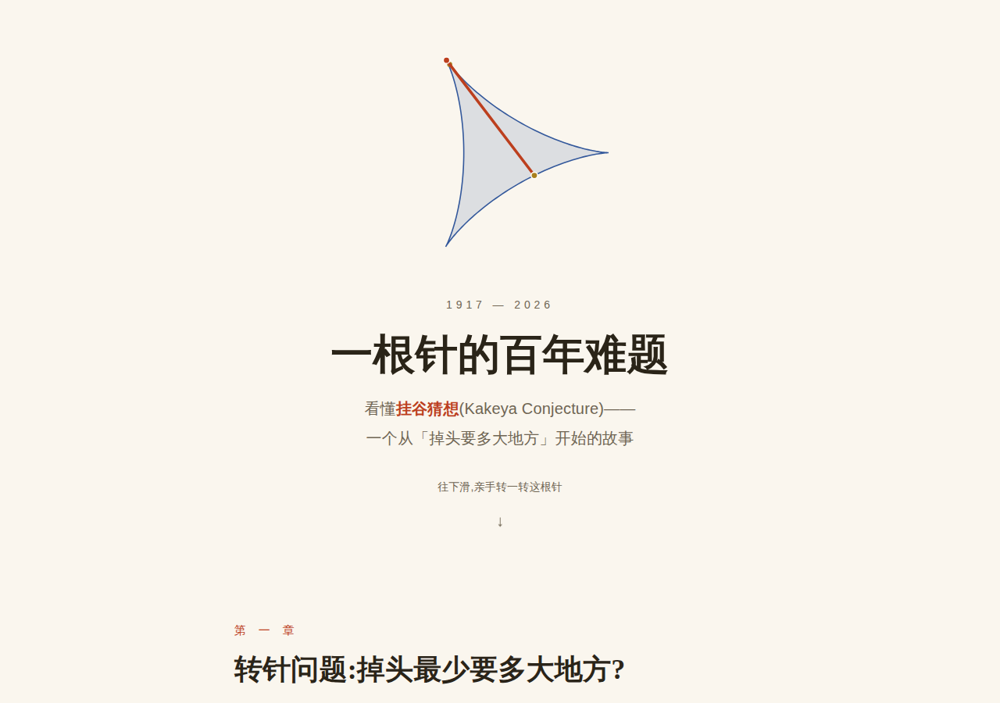

读 前 须 知
看懂这些新闻之前,先弄清三件事
「AI 解决了某某难题」这类标题,这两年几乎每月都有。它们有的名副其实,有的是乌龙。判断的标尺只有三把:
🔎
「解决」还是「查到」?
很多所谓的 AI 解题,其实是模型在浩瀚文献里找到了早已发表的答案。这很有用,但不是新数学。2025 年 10 月 OpenAI 的「十个 Erdős 问题」就是这么翻的车。
✅
谁来检查证明?
一份上百页的机器证明,人类很难逐行核对。如今的通行做法是把证明写成 Lean 这种「证明编程语言」,由计算机逐步核验,一个漏洞也放不过——本站标注 Lean 已验证 的都是这一类。
🤝
功劳算谁的?
AI 极少从零开始:它几乎总是沿着某位数学家铺好的路走完最后几步。路是谁铺的、模型有没有「偷看」未发表的手稿——2026 年 9 月纳维–斯托克斯方程的署名风波,争的正是这个。
时 间 线
三年,从「改进纪录」到「千禧年难题」
圆点颜色:难题解决 表示一个公开问题被证明或被反例推翻;改进纪录 表示 AI 找到了比人类更好的构造或界;里程碑 是能力节点;争议 · 乌龙 提醒你别急着相信标题。
2023
2024
2025
2026
时间线只收录有公开论文或形式化证明可查的事件;数十个「长尾」Erdős 问题的 AI 解答,可在陶哲轩维护的 AI contributions to Erdős problems 中逐条查阅。
其 他 实 验
人类这边的故事
同一时期,人类数学家也在攻克百年难题。作为对照,这里有一篇纯人类证明的可视化科普:

🪡 一根针的百年难题 —— 挂谷猜想可视化
从 1917 年「一根针如何调头」的小谜题,到王虹与 Joshua Zahl 的 2025 年三维证明和 2026 年菲尔兹奖。可交互动画,亲手转一转这根针。